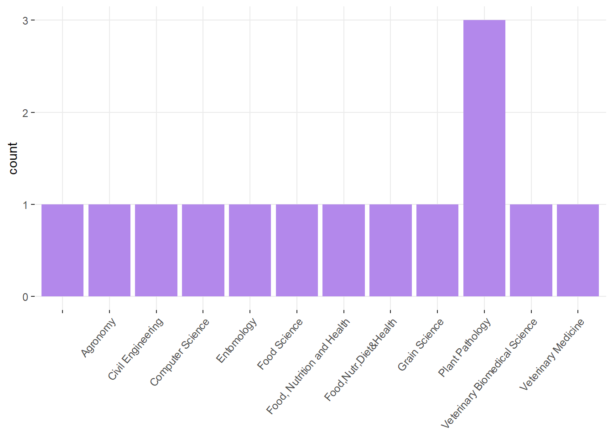

STAT 720 - Design of Experiments
Summer 2026
Day 1 Welcome to STAT 720!
June 1st, 2026
1.1 About this course:
- About me
- About you:

In rounds: What’s your major, what do you expect to learn?
From 2025 TEVALs: “What advice would you give to future students of this course?”
- Come to class ready to learn and engage in lecture to get the most out of it. The summer goes by fast, so use the 1 on 1 time too.
- Engage. Ask and answer questions. Don’t be afraid to speak up. Dr. Lacasa is great about making it a safe environment for you to get things wrong. That’s how you learn.
- I would advise future students to actively participate by discussing ideas positively and asking thoughtful questions during class. This approach helps connect the course material to real-world problems in experimental design and deepens understanding.
1.1.1 Logistics
- Website
- Syllabus
- Statistical programming requirements
- Rough mindmap of the course (on whiteboard)
- Semester project - design your own experiment.
- Grades: A (100-89.999999999(!!!)), B (89.99-79.99), C (79.99-69.99), D (69.99-59.99), F (<59.99).
- Attendance policies
- Semester projects
1.2 Learning goals
By the end of this course, you should be able to:
- Be able to identify the treatment design, experiment design, experimental unit and observational unit.
- Be able to write the statistical model that corresponds to (simple) designed experiments.
- Be able to write the Materials and Methods section in a paper (or thesis) that describes the designed experiment.
- Distinguish the benefits/disadvantages of different experiment designs.
1.3 On notation
- scalars: \(y\), \(\sigma\), \(\beta_0\)
- vectors: \(\mathbf{y} \equiv [y_1, y_2, ..., y_n]'\), \(\boldsymbol{\beta} \equiv [\beta_1, \beta_2, ..., \beta_p]'\), \(\boldsymbol{u}\)
- matrices: \(\mathbf{X}\), \(\Sigma\)
- probability distribution: \(y \sim N(0, \sigma^2)\), \(\mathbf{y} \sim N(\boldsymbol{0}, \sigma^2\mathbf{I})\).
1.4 Why do designed experiments exist?
1.4.1 Example
You want to bake cookies with a certain diameter (to fit the box) and are not sure about the amount of baking powder vs. baking soda.
- more baking powder = smaller, more cakey cookies
- more baking soda = larger, crispier cookies
How can we estimate the cookie diameter
Case A:
Bake 3 cookies, each with a different levels of baking powder:baking soda ratio.Case B:
- On Monday: Bake 3 cookies, each with a different levels of baking powder:baking soda ratio.
- On Tuesday: Bake 3 cookies, each with a different levels of baking powder:baking soda ratio.
- On Wednesday: Bake 3 cookies, each with a different levels of baking powder:baking soda ratio.Case C:
- On Monday: Bake 3 cookies with the first level of baking powder:baking soda ratio.
- On Tuesday: Bake 3 cookies with the second level of baking powder:baking soda ratio.
- On Wednesday: Bake 3 cookies with the third level of baking powder:baking soda ratio.Group discussion: which is preferrable?
1.5 For tomorrow
- Install R and RStudio.
- Answer this short survey to figure out if we need to move 1-1.5 weeks of class to Zoom.